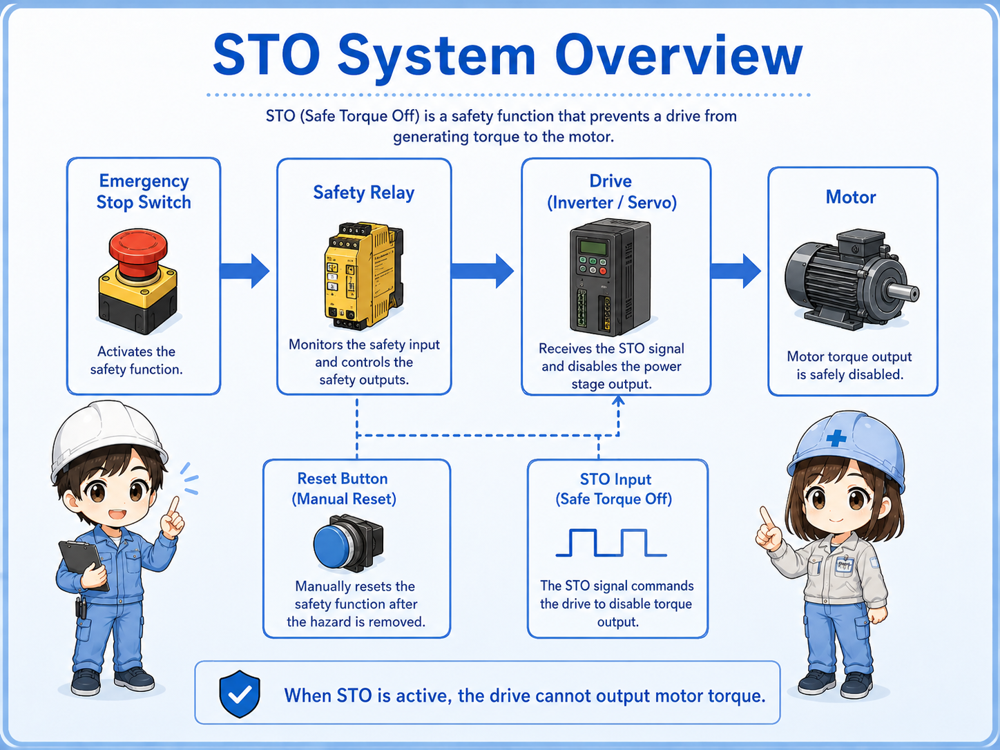
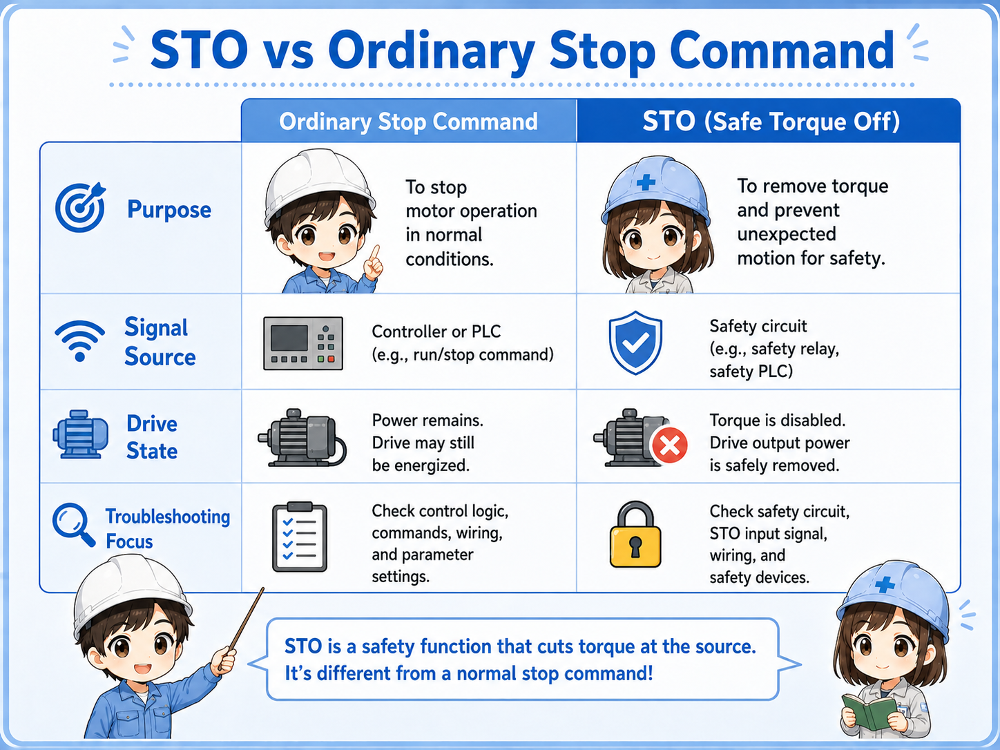
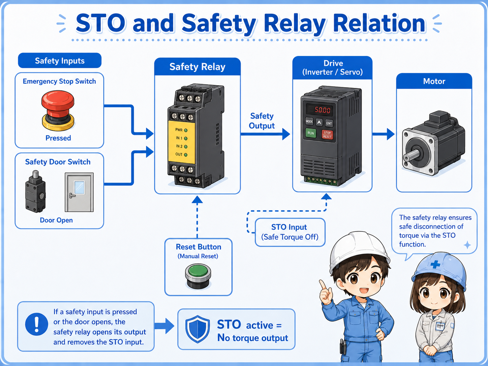
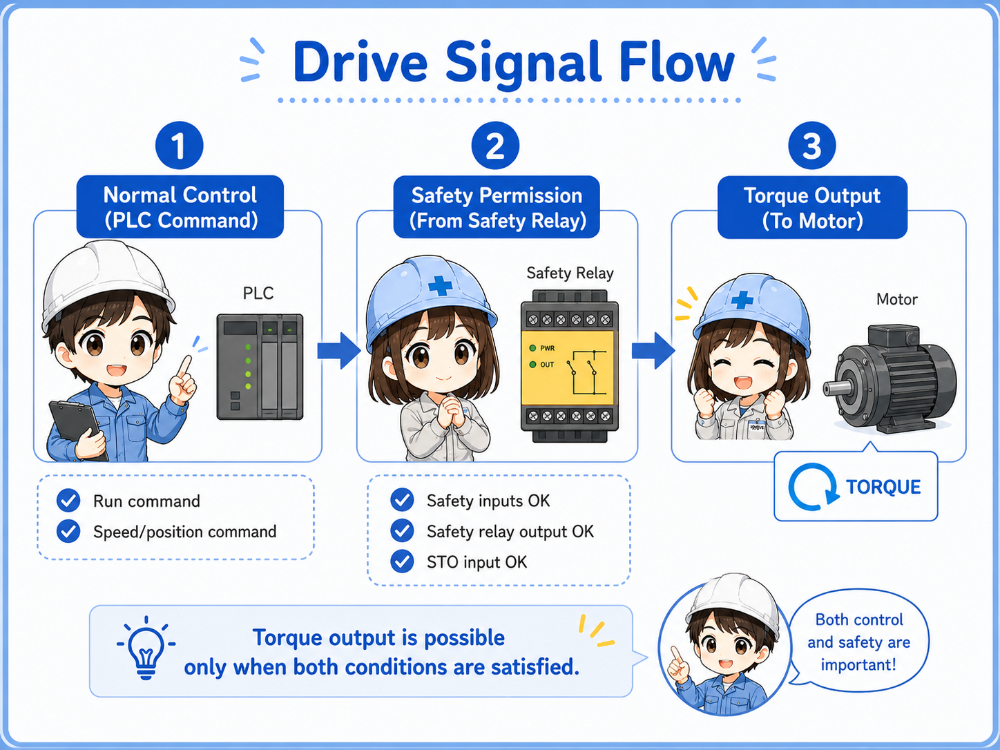
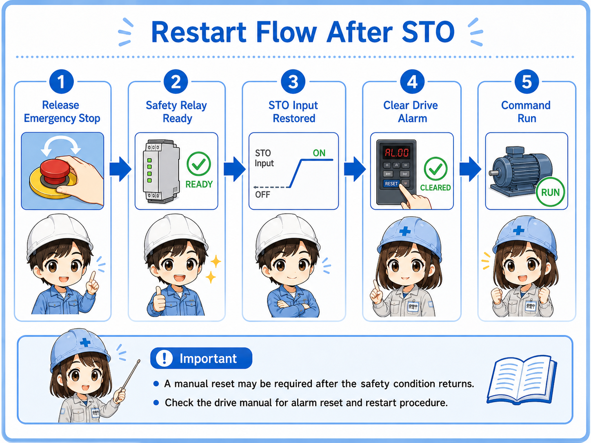
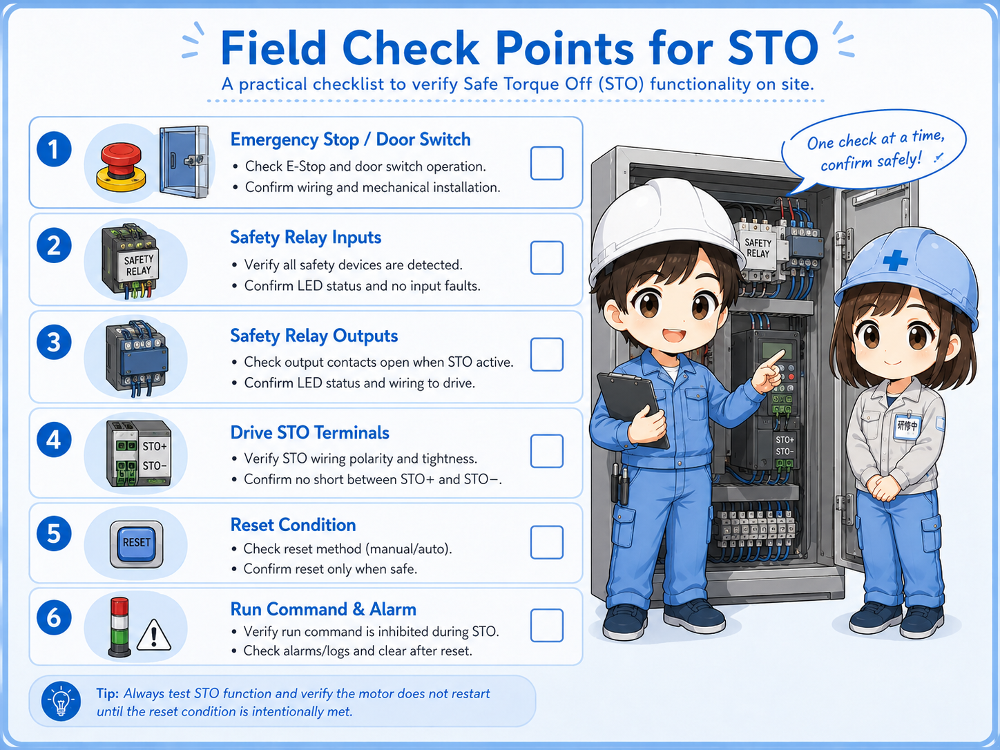

What STO does
STO means Safe Torque Off. In simple terms, it makes the drive unable to output motor torque.
In an inverter or servo drive, a normal stop command tells the drive to stop operation through its control logic. STO is different. It is a safety-related function that removes the drive’s ability to create torque at the motor.
When STO is active, the drive may still have power and the display may still be on. However, the drive should not generate torque to move the motor through normal output operation.
This is why STO often appears together with emergency stop switches, safety relays, safety door switches, safety controllers, and servo or inverter enable circuits.

STO vs ordinary stop command
A normal stop command and STO can both stop motion, but they do not mean the same thing.
A normal stop command is part of ordinary operation. The PLC or drive command tells the motor to decelerate, stop, or end a cycle.
STO is used as a safety function. It removes the ability to produce torque so the motor cannot be driven by the inverter or servo output.
| Item | Ordinary stop command | STO |
|---|---|---|
| Main purpose | Stop operation as part of normal control | Remove torque-producing permission as a safety function |
| Typical signal source | PLC output, operation panel, drive command, or program logic | Safety relay, safety controller, safety PLC, or emergency stop circuit |
| Drive state | The drive stops according to the command and settings | The drive cannot output torque while STO is active |
| Troubleshooting focus | Run command, speed command, interlock, parameter, alarm | STO input, safety relay output, reset condition, wiring, safety alarm |

How STO relates to emergency stop and safety relays
STO is often used as the output side of a safety circuit.
For example, an emergency stop switch or safety door switch may connect to a safety relay or safety controller. The safety device checks whether the input channels are healthy and whether the reset condition is satisfied.
If the safety condition is not satisfied, the safety device opens its safety outputs. Those outputs may be connected to the STO terminals of an inverter or servo drive.
When the STO input is removed, the drive enters a state where torque cannot be produced. This is why STO, emergency stop, safety door switches, safety relays, and reset buttons are often checked together.

Do not judge the safety function by one wire only
The actual safety function depends on the switch, wiring, safety relay or controller, drive STO terminals, reset logic, and machine design. Always check the full circuit and the manufacturer’s manual.
Basic drive signal flow
When STO is involved, it helps to separate the normal run command from the safety permission path.
1. Normal control
The PLC or controller sends run, speed, or position commands to the drive.
2. Safety permission
The safety relay or safety controller provides the STO permission path.
3. Torque output
The drive can produce motor torque only when the required conditions are satisfied.

Simple way to remember
The PLC may command the drive to run, but if STO is active, the drive cannot output torque. Normal command and safety permission must both be understood.
Why the drive may not restart after STO
If the motor will not run after an emergency stop or safety stop, the cause may not be the motor or drive output itself.
After STO is activated, the system may require a proper release and reset sequence. The emergency stop must be released, the safety relay must return to the ready state, the drive may need its alarm cleared, and the PLC may need to send a new run command.
Some systems also require a manual reset button after the safety condition returns to normal. This prevents the machine from restarting unexpectedly just because the emergency stop was released.
Emergency stop released
Confirm the emergency stop switch is fully released and its contacts returned correctly.
Safety relay ready
Check safety relay LEDs, input channels, output channels, and reset status.
STO input restored
Confirm the drive’s STO input or safety input is receiving the required signal.
Drive alarm cleared
Check whether the drive requires an alarm reset or power cycle according to the manual.

Field check points
STO troubleshooting should be done carefully because it belongs to the safety-related control path.

Emergency stop or safety door
Confirm whether a safety switch is pressed, open, locked, or not fully returned.
Safety relay inputs
Check input channel status and whether both channels are healthy if the system uses dual-channel wiring.
Safety relay outputs
Confirm whether the safety output that feeds STO is actually closed or active.
Drive STO terminals
Check whether the drive’s STO or safety input terminals are receiving the correct signal according to the manual.
Reset condition
Confirm whether manual reset is required after the safety condition returns to normal.
Run command and alarm
After STO is restored, check whether a new run command is present and whether drive alarms are cleared.
Do not bypass STO casually
STO is part of a safety-related function. Do not short or bypass STO terminals just to make a machine run. Follow site rules, lockout procedures, and the manufacturer’s manual.
Common beginner mistakes
STO problems are often misunderstood because the drive may still look powered on.
- Thinking STO is the same as turning off the main power.
- Thinking a PLC run command alone is enough to make the drive output torque.
- Checking only the motor and ignoring the safety relay or STO input.
- Forgetting that a manual reset may be required after the safety condition returns.
- Assuming a drive display means the drive is ready to output torque.
- Trying to bypass STO terminals during troubleshooting.
STO does not explain every stop condition
A drive may also stop because of alarms, overcurrent, overvoltage, communication errors, interlocks, missing run commands, or parameter settings. STO is one important check point, not the only one.
Short conversation

If the drive display is on but the motor will not run, do not check only the run command. STO may be active.

So the drive can have power, but still be unable to output torque?
Exactly. STO disables torque output. The control power or display may still be alive, but the drive is not allowed to produce motor torque.
Then I should check the safety relay, STO input, reset condition, and drive alarm too.
Yes. Separate normal control commands from safety permission. That makes troubleshooting much clearer.
Summary
STO, or Safe Torque Off, is a safety function that removes the drive’s ability to produce motor torque. It is commonly used with inverters and servo drives, especially when emergency stop switches, safety relays, safety door switches, or safety controllers are involved.
A normal stop command and STO are not the same. The PLC may request motion, but if STO is active, the drive cannot output torque. In the field, check the emergency stop or safety switch, safety relay, STO terminals, reset condition, drive alarm, and normal run command separately.